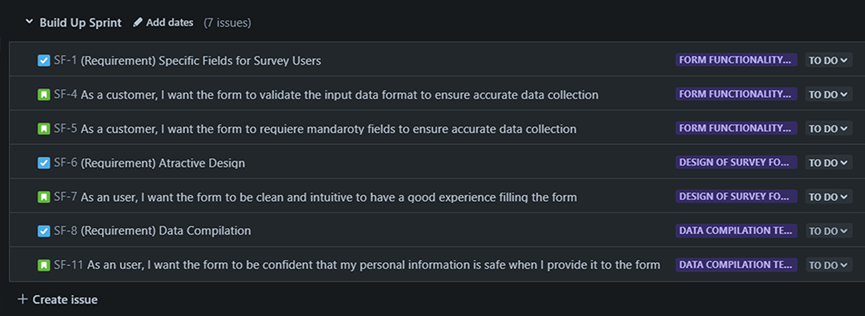

Testing project management for a simple form.
The idea behind the project
Embarking on the task of creating a portfolio for my QA projects posed a great challenge. While it's intuitive to showcase Selenium frameworks or code-based automated tests, the question arose: how does one present a project centered around manual testing?
During my exploration of HTML and CSS on freeCodeCamp, I stumbled upon the opportunity to create responsive web projects. I decided to leverage this chance by selecting the first project —a survey form— as a basis to showcase all the abilities that I've learned as a tester with a Jira Testing Project.
You can view the form project here.
Requirements Gathering and Jira Setup
To kickstart the project, I engaged in a simulated interview with ChatGPT to extract requirements, meticulously tracked and documented in Jira. The build-up sprint in Jira was dedicated to defining requirements and user stories, as illustrated here.

Also, for more reference, you can see some of the issues documented here: SF-1 and SF-5.
UML Design
Taking a step further, I've taken a course to polish my UML design knowdlege. So I've take advantage of this to design some use cases in Draw.io.

Then, I've looked foward to design the main use case, end user and customer descriptions on Excel.
Activity Diagram
The project was driven by a set of user stories, and for them, I've used again an UML map to design an activity diagram like this.

Manual Testing Sprint
A dedicated sprint was orchestrated for manual testing, encompassing functional testing steps to ensure the form's quality.
Comprehensive test cases were formulated, along with respective happy and unhappy paths, diagrams, and equivalence classes to try to cover all posible gaps and ensuring that the form is bug-free.

Here you can see the document of SF-12 with their respective Test Cases I designed for this sprint.
Performance Testing with JMeter
To evaluate the system's performance, I've also executed a performance test using JMeter. Theese are the results of 500 users on a ramp-up period of 1 second entering in the form webpage.

Automation with Selenium on Maven
With the will of increase my proficiency in automated testing, I've developed a framework using Selenium on Maven. I've programmed test cases for mandatory and optional form fields, to cover all user paths on the form.

Here you can see the TC proyects on GitHub.
Summary
In summarizing this journey, the project not only serves as a testament to manual testing prowess but also showcases the versatility to seamlessly transition into automated testing frameworks.